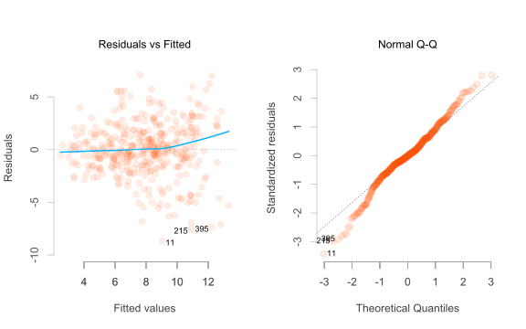
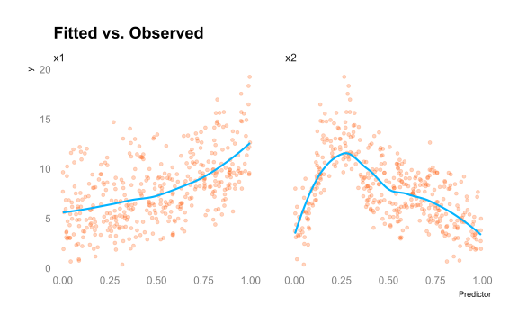
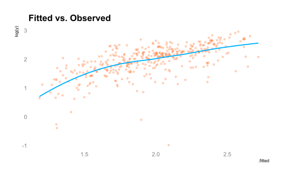

Why not just use standard methods?
The standard linear model is ubiquitous in statistical training and application, and for good reason. It is simple to do and easy to understand. Let’s go ahead and do one to get things started.
mod = lm(y ~ x1 + x2, data=dat)
summary(mod)| term | estimate | std.error | statistic | p.value |
|---|---|---|---|---|
| (Intercept) | 7.27 | 0.33 | 21.83 | 0 |
| x1 | 6.36 | 0.44 | 14.62 | 0 |
| x2 | -5.12 | 0.45 | -11.31 | 0 |
| r.squared |
|---|
| 0.46 |
Everything is nice and tidy. We have straightforward information, positive effect of x1, negative for x2, and familiar output. Depending on your context, the R2 may or may not be something exciting. Let’s look at some diagnostics1.

Some issues might be present, as we might be getting a little more variance with some, especially higher, fitted values. We’re also a little loose in the tails of the distribution of the residuals. Let’s compare our predictions to the data. With a strong model we might see a cigar shaped cloud converging to a line with slope 1 as the fit gets better. We seem to be having some issues here, as the residual plot noted above.

Now let’s go back and visualize the data. The following plots both predictors against the target variable.

Yikes. We certainly have a positive effect for x1, but it looks rather curvy. The other predictor doesn’t appear to have a relationship that could be classified as easily. It is sharply positive for low values of x2, but negative thereafter, though not in a straightforward fashion.
Heteroscedasticity, non-normality etc.
In many cases as above, people have some standby methods for dealing with the problem. For example, they might see the qqplot for the residuals and think some of those cases are ‘outliers’, perhaps even dropping them from analysis. Others might try a transformation of the target variable, for example, in cases of heteroscedasticity (not because of non-normality!) some might take the log.
modlog = lm(log(y) ~ x1 + x2, dat)
summary(modlog)| term | estimate | std.error | statistic | p.value |
|---|---|---|---|---|
| (Intercept) | 1.83 | 0.05 | 33.84 | 0 |
| x1 | 0.94 | 0.07 | 13.29 | 0 |
| x2 | -0.69 | 0.07 | -9.37 | 0 |
| r.squared |
|---|
| 0.4 |
Well, our fit in terms of R2 has actually gone down. Let’s check the diagnostics.

The transformation may have helped in some ways, but made other things worse.

We continue to see some poor fitting cases and now our fit is flattening even more than it was.
This is a fairly typical result. Transformations often exacerbate data issues or fail to help. What’s more, some of them lead to more difficult interpretation, or aren’t even applicable (e.g. categorical, ordinal targets).
Outliers, if there was actually a standard for deeming something as such, are just indications that your model doesn’t capture the data generating process in some fashion. Cutting data out of the modeling process for that reason hasn’t been acceptable for a long time (if it ever was).
Data abounds where a standard linear model performs poorly or doesn’t do a good enough job capturing the nuances of the data. There may be nonlinear relationships as above, dependency in the observations, known non-Gaussian data etc. One should be prepared to use models better suited to the situation, rather than torturing the data to fit a simplified modeling scheme.
In case you are wondering, yes, these diagnostic plots are in fact base R graphics, and they still can look good with some work.↩